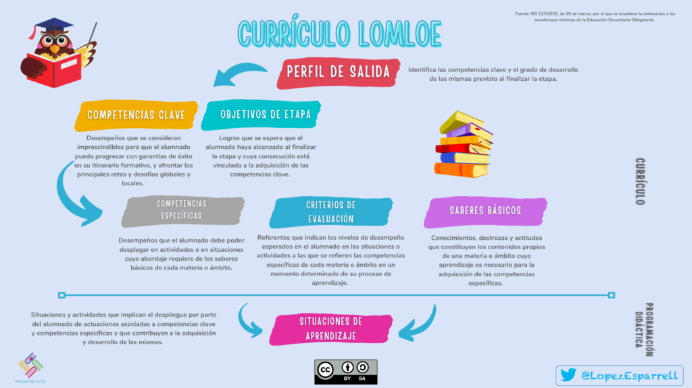

El proceso de evaluación debe iniciarse tomando como referentes dos aspectos fundamentales: el currículo de nuestra área o materia y nuestro contexto educativo.
Evaluación con el cuaderno de Séneca.
Currículo y contexto como puntos de partida.
El currículo de nuestra área o materia.

¡Buenas! ¿Qué tal estás? Soy Lexa y mi misión es mostrarte el currículo LOMLOE, uno de los pilares de nuestras situaciones de aprendizaje...
Aunque parezca algo obvio decirlo, lo que trabajamos en el aula no es fruto de la espontaneidad o de los intereses del docente, sino que debe partir del currículo establecido. Por ello, es fundamental que el / la docente tenga un conocimiento preciso del currículo del área o materia que va a impartir.
Es por esta razón que el primer paso para iniciar el proceso de evaluación consiste en realizar una lectura profunda y un análisis del currículo vigente, para así poder pensar cómo trasladarlo a nuestra aula de una forma eficiente.
Aquí tienes disponible el currículo de las distintas áreas o materias, primero el estatal y luego el andaluz (ordenado por etapas educativas):
LOMLOE y normativa estatal.
|
LOMLOE |
RD de Infantil |
RD de Primaria |
RD de ESO |
|
RD de Bachillerato |
RD evaluación Primaria, ESO, Bachillerato y FP |
Currículo LOMLOE de Infantil (Andalucía).
|
Decreto de Infantil |
Orden de Infantil |
Currículo LOMLOE de Primaria (Andalucía).
|
Decreto de Primaria |
Orden de Primaria |
Currículo LOMLOE de ESO (Andalucía).
|
Decreto de ESO |
Orden de ESO |
Currículo LOMLOE de Bachillerato (Andalucía).
|
Decreto de Bachillerato |
Orden de Bachillerato |
Pero no basta con conocer los elementos curriculares de nuestra área o materia, sino que también debemos comprender cómo se interrelacionan unos con otros conformando una red. Lo podemos ver observando la siguiente infografía:
Fuente: Blog "El loco de la mochila".
Y ahora seguro que estás pensando: ¡qué amplio es el currículo! Y también te estarás preguntando: ¿cómo puedo disponer de él de una forma que sea operativa para poder estudiarlo con tranquilidad y poder pensar cómo trasladarlo a mi aula? Parece evidente que los PDFs anteriores -tan extensos- no son muy adecuados ni manejables para consultarlos en nuestro día a día... Pues una buena idea para hacer que el currículo de nuestro área o materia sea un poco más accesible es fabricarnos una síntesis como la siguiente:
En esta tabla hemos recogido los principales elementos curriculares de Oratoria y debate de 1º de ESO. De esta forma, el / la docente que la imparta tiene su currículo accesible, bien a mano, como documento de consulta habitual.
¿Quieres hacer una similar con las áreas o materias que impartes? Pues si así lo deseas, puedes usar los kits que nos ofrece el blog "El loco de la mochila", especialmente los PDFs con los elementos curriculares. Hay un kit para cada etapa. Puedes acceder a ellos a través de estos enlaces y crearte tu propia síntesis del currículo:
 |
|
|
|
| Kit para Infantil | Kit para Primaria | Kit para ESO | Kit para Bachillerato |
El contexto.

¡Buenas! Mi nombre es FlashFormative y soy experta en evaluación y feedback. Como decía mi compañera Lexa, el primer pilar para nuestras situaciones de aprendizaje es el currículo LOMLOE. Pero no podemos tampoco olvidarnos de nuestra realidad educativa, esto es, de nuestro contexto.
El traslado del currículo al aula no es una cuestión mecánica ni tampoco sencilla. Todo lo contrario: el / la docente debe poseer un conocimiento profundo de su contexto educativo en un sentido amplio, tanto del físico o geográfico (la zona, los recursos disponibles, etc.) como el personal (individual y grupal, sus intereses, sus dificultades, sus talentos, etc.) para que el proceso educativo sea eficaz y se desarrolle adecuadamente.
Para esta cuestión -que tiene una importancia clave- es fundamental realizar una evaluación inicial cualitativa, así como la observación diaria y sistemática del / a docente en clase. Tanto una como otra son vitales para que nuestras situaciones de aprendizaje estén contextualizadas y, por tanto, funcionen de forma óptima.
¿Quieres saber más sobre cómo hacer la evaluación inicial?

Yo soy ConecTOR y te ayudaré a ampliar tus conocimientos si así lo deseas. Mi mochila está cargada de recursos bibliográficos, hiperenlaces y webgrafías útiles para seguir aprendiendo...
Mi compañera FlashFormative ha hecho referencia a la importancia de llevar a cabo una evaluación inicial cualitativa. ¿Pero esto cómo podemos hacerlo?
Si quieres más información sobre este tema, puedes leer la entrada del blog "El loco de la mochila" dedicada a esto pinchando en la imagen. Además, te recomiendo que te descargues la plantilla editable para la recogida de información, pues te resultará especialmente útil.
Obra publicada con Licencia Creative Commons Reconocimiento No comercial Compartir igual 4.0